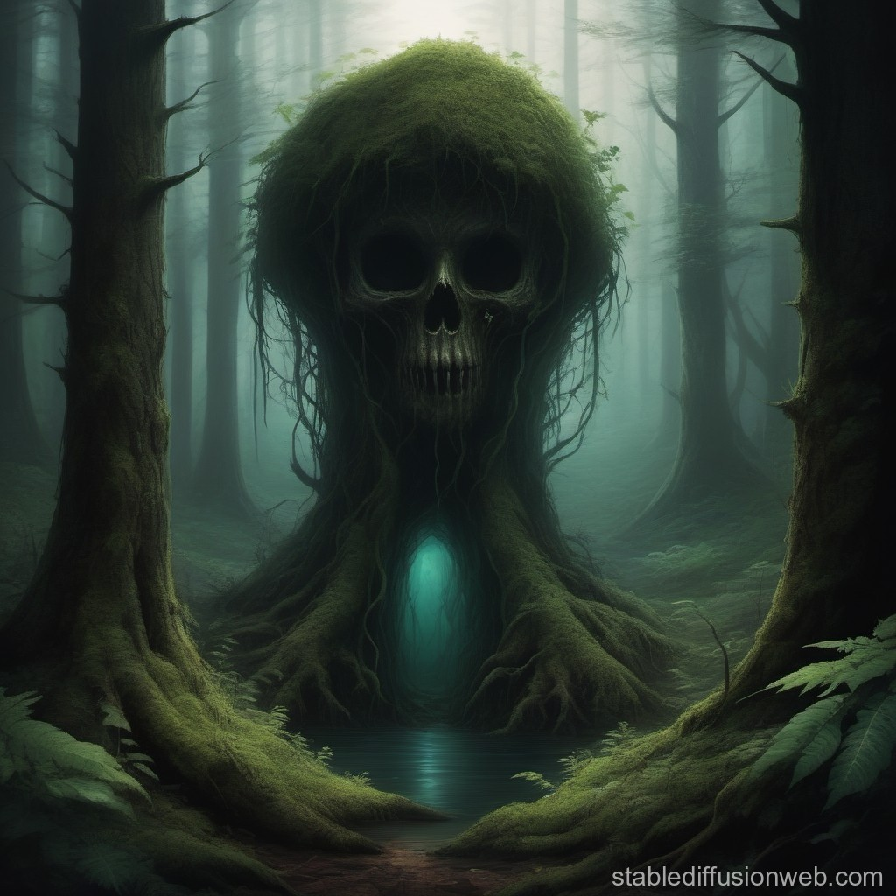

Feeling a chill down your spine and recognizing the danger lurking near the mysterious altar, you quickly retreat. With every step away from the ominous structure, you feel a sense of relief washing over you.
As you leave the clearing behind and retrace your steps through the forest, you can't shake the feeling of unease that lingers. The memory of the altar's malevolent energy serves as a stark reminder of the perils that can be found within the enchanted forest.
Eventually, you emerge from the forest's depths, grateful to leave the haunting presence of the altar behind you. With a newfound appreciation for the safety of your home, you vow to never again venture so recklessly into the unknown.
Your adventure may not have ended with grand treasures or heroic feats, but you've learned a valuable lesson about the importance of caution and self-preservation.
As you return home, you carry with you the memories of your journey, knowing that sometimes the greatest treasure is simply making it back in one piece.
Your journey in the enchanted forest may not have been glamorous, but your decision to return home safely speaks volumes about your wisdom and prudence.
Would you like to embark on another adventure?
